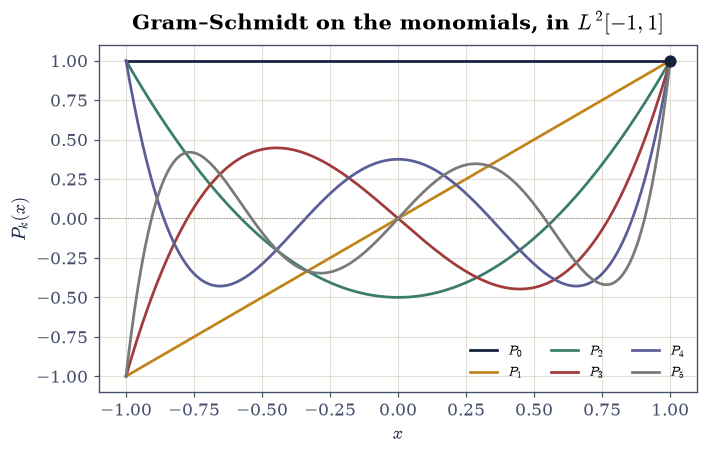
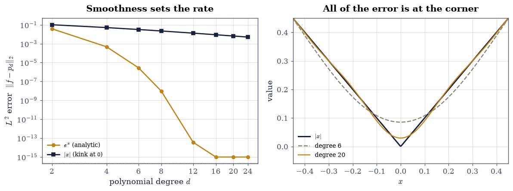
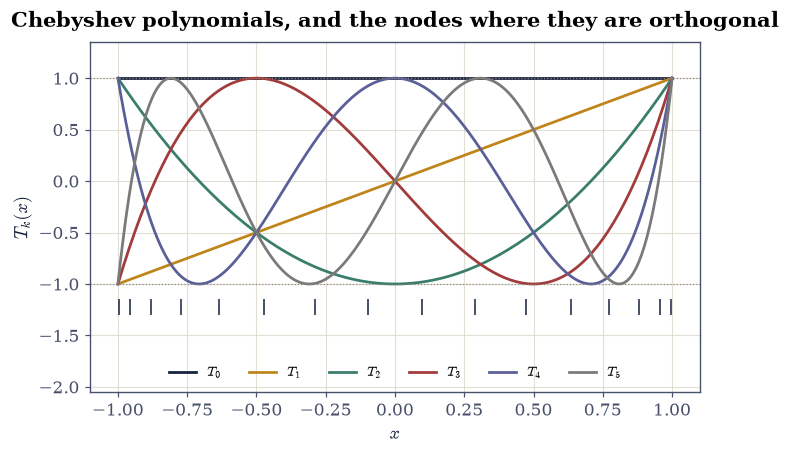
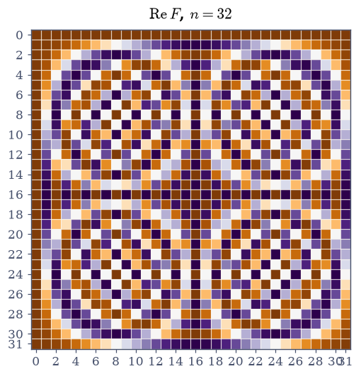
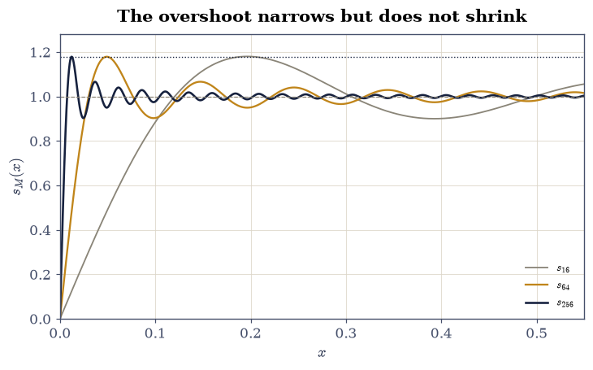

2.5 Orthogonal Bases in Function Space#
Notebook overview#
Nothing in this chapter used the fact that a vector is a list of numbers. A projection needs an inner product; Gram–Schmidt needs an inner product; least squares needs an inner product. Supply one on a space of functions and the entire apparatus transfers without a single change of argument. That is the payoff of §1.5’s insistence that a vector space is defined by its axioms rather than by \(\mathbb{R}^n\).
The inner product is \(\langle f, g\rangle = \int_{-1}^{1} f(x)g(x)\,dx\), and the
consequences are immediate and concrete. Running Gram–Schmidt on the monomials
\(\{1, x, x^2, \dots\}\) produces the Legendre polynomials — not something
resembling them, but them exactly, to \(3\times10^{-13}\) against
scipy.special.legendre. The Chebyshev polynomials come out of a different
weight, and the discrete Fourier transform out of a different space entirely,
and all three are the same construction wearing different coats.
The practical half is a conditioning story, and it is sharper here than anywhere else in the chapter. The monomials are a terrible basis: their Gram matrix is a Hilbert-like matrix whose condition number reaches \(10^{17}\) by degree 30, and a least-squares fit in that basis stops converging around degree 22 — the error gets worse as more terms are added. The Legendre Gram matrix is diagonal, so its condition number is exactly \(2d+1\), and the same fit keeps improving. Same subspace, same best approximation, same answer in exact arithmetic; a factor of \(10^{16}\) in how hard it is to compute.
How to read a check. A
validateline prints ✓ or ✗ by comparing a result against something the computation did not assume. A ✗ flags a mismatch to investigate, never a verdict on its own.
Theory in brief#
An inner product on functions#
On \(C[-1,1]\), define
This satisfies every axiom §0.3 required — symmetry, bilinearity, and positive definiteness — so Cauchy–Schwarz, the triangle inequality, Pythagoras, orthogonal projection and Gram–Schmidt all hold verbatim. “Orthogonal” now means \(\int_{-1}^{1} fg = 0\), which is a statement about cancellation rather than about angles, but it is the same statement.
Computing the inner product exactly#
The integral is evaluated by Gauss–Legendre quadrature: leggauss(n) returns
nodes \(x_i\) and weights \(w_i\) with
The \(2n-1\) is sharp and it is the reason the rule exists: \(n\) nodes and \(n\) weights are \(2n\) free parameters, and the rule spends all of them. For polynomial work this makes Eq. 132 an exact computation rather than an approximation, which matters when the identities below are checked to \(10^{-14}\).
Gram–Schmidt, unchanged#
Applied to \(\{1, x, x^2, \dots, x^d\}\), the recurrence is the one from §2.2 with the new inner product substituted:
Normalising each \(q_k\) so that \(q_k(1) = 1\) gives the Legendre polynomials \(P_k\), which satisfy
Coefficients are inner products#
Once a basis is orthogonal, the expansion coefficients require no linear solve:
and these \(c_k\) are exactly the least-squares coefficients — the Gram matrix is diagonal, so the normal equations decouple into \(d+1\) scalar divisions. This is the payoff of orthogonality, and it is the same payoff \(QR\) delivered in §2.3.
Why the monomials are a bad basis#
In the monomial basis the Gram matrix is not diagonal but
a near-relative of the Hilbert matrix of §0.2, with the same exponential growth in \(\kappa\). The subspace spanned is identical and so is the best approximation in it; only the coordinates differ, and by §1.5 a change of basis can change the conditioning of everything without changing the answer.
Chebyshev, and orthogonality on a grid#
With the weight \(1/\sqrt{1-x^2}\) the same construction yields the Chebyshev polynomials, which have the closed form
and a second, discrete orthogonality: evaluated at the \(N\) Chebyshev–Gauss nodes \(x_i = \cos\!\big((2i+1)\pi/2N\big)\), the vectors \(\big(T_j(x_0), \dots, T_j(x_{N-1})\big)\) are exactly orthogonal, with squared length \(N\) for \(j = 0\) and \(N/2\) otherwise. Continuous orthogonality has become matrix orthogonality, with no approximation anywhere.
The DFT is the same idea on \(\mathbb{C}^n\)#
Take the space \(\mathbb{C}^n\) with \(\langle x, y\rangle = \bar{x}^{\top}y\) and the basis of sampled complex exponentials. The matrix is
so \(F/\sqrt{n}\) is unitary: the DFT is a change to an orthonormal basis and nothing more. Unitarity gives Parseval,
the statement that changing to an orthonormal basis preserves length, which is the same reason \(QR\) was stable in §2.2.
Gibbs#
Orthogonal expansions converge in \(\|\cdot\|_2\), and that is weaker than it sounds. At a jump discontinuity the partial sums overshoot by a fixed proportion of the jump,
and this does not shrink as more terms are added. The overshoot narrows, so its contribution to the \(L^2\) error goes to zero, but its height converges to \(8.949\%\) of the jump and stays there.
Setup#
Data only: the quadrature nodes and weights, and reference Legendre values from scipy. The exact inner product — the notebook’s instrument — is built and certified in Exercise 1, which is titled after it.
The Setup below holds this notebook’s data and instruments — nothing you are asked to build. It is collapsed so the building stays yours; expand it whenever you want the details.
Exercise 1: The instrument: an inner product that is exact#
Before any identity can be checked to \(10^{-14}\), the thing doing the checking has to be exact. Gauss–Legendre quadrature Eq. 133 is, on polynomials, and the boundary at degree \(2n-1\) is not a rule of thumb but a theorem with a sharp edge: at degree \(2n\) the rule fails, and it fails by a visible amount rather than by rounding.
Part a) Take x, w = np.polynomial.legendre.leggauss(8) and evaluate
\(\int_{-1}^{1} x^d\,dx\) as np.sum(w * x**d) for \(d = 14, 15, 16, 17\). Compare
against the exact value, which is \(0\) for odd \(d\) and \(2/(d+1)\) for even \(d\).
Part b) Confirm the sharpness. The rule is exact to \(10^{-14}\) at \(d = 14\) and \(d = 15 = 2n-1\), and wrong by \(4.7\times10^{-5}\) at \(d = 16 = 2n\) — an error five orders above rounding, so the failure is structural rather than numerical. Report the error at each degree and confirm the jump.
Part c) Verify the axioms of Eq. 132 numerically on the
40-point rule. Write inner(u, v) — the weighted sum of
Eq. 132 over the 40-point nodes — and verify with it, on the
sampled functions \(u = x^3 - x\),
\(v = x^2 + 1\), \(s = e^{x}\). Confirm symmetry \(\langle u,v\rangle =
\langle v,u\rangle\) to \(10^{-15}\), bilinearity
\(\langle u + 2s, v\rangle = \langle u,v\rangle + 2\langle s,v\rangle\) to
\(10^{-14}\), and positive definiteness \(\langle u,u\rangle > 0\) with
\(\langle 0,0\rangle = 0\).
Part d) Confirm Cauchy–Schwarz, which now reads \(\left|\int uv\right| \le \|u\|\,\|v\|\), on the three pairs drawn from \(\{u, v, s\}\), and report the ratio \(|\langle u,v\rangle|/(\|u\|\|v\|)\) for each — the cosine of an angle between two functions.
Gauss-Legendre with n = 8: exact through degree 15
d quadrature exact error
14 0.1333333333 0.1333333333 8.049e-16
15 0.0000000000 0.0000000000 0.000e+00
16 0.1176005105 0.1176470588 4.655e-05
17 0.0000000000 0.0000000000 0.000e+00
error jumps by a factor of 5.8e+10 between degree 15 = 2n-1 and degree 16 = 2n
the axioms of Eq. 1, on u = x^3 - x, v = x^2 + 1, s = exp(x):
symmetry |<u,v> - <v,u>| = 1.279e-17
bilinearity |<u+2s,v> - <u,v> - 2<s,v>| = 8.882e-16
positivity <u,u> = 0.1523809524 > 0, <0,0> = 0.0e+00
Cauchy-Schwarz, |<f,g>| <= |f| |g|:
u, v: |<f,g>| = 0.000000 <= 0.754247 = |f||g| cos = 0.000000
u, s: |<f,g>| = 0.286251 <= 0.743414 = |f||g| cos = 0.385050
v, s: |<f,g>| = 3.229287 <= 3.679712 = |f||g| cos = 0.877592
Validation 1#
The quadrature check is two-sided on purpose: exactness at \(2n-1\) says the rule works, and failure at \(2n\) says the bound is the true one and not a conservative estimate. Everything later in the notebook rests on the first half, so it is worth establishing that the instrument is exact before trusting a \(10^{-14}\) agreement.
✓ Gauss-Legendre with 8 nodes is exact through degree 2n-1 = 15 (Eq. 2) [error 8.05e-16 at degree 14 and 0.00e+00 at degree 15]
✓ and the bound is sharp: it fails at degree 2n = 16 [error 4.655e-05, five orders above rounding, so the failure is structural — n nodes and n weights are 2n parameters and the rule has spent them all]
✓ the L2 inner product satisfies the axioms of Eq. 1 [symmetry 1.28e-17, bilinearity 8.88e-16, <u,u> = 0.152381 > 0]
✓ and Cauchy-Schwarz holds for functions exactly as it did for vectors [cosines ['0.0000', '0.3850', '0.8776'], all at most 1]
True
Exercise 2: Gram–Schmidt on the monomials produces the Legendre polynomials#
Eq. 134 is §2.2’s recurrence with one
substitution: the dot product becomes the integral. Nothing else changes, and
the result is not merely an orthogonal basis of polynomials but, after the
normalisation \(q_k(1) = 1\), the classical Legendre polynomials — the same ones
that appear in the multipole expansion, in spherical harmonics, and in the
quadrature rule being used to compute them. That last point is worth noticing:
the nodes of leggauss(n) are the roots of \(P_n\), so this exercise computes
the Legendre polynomials with a rule built out of the Legendre polynomials.
Part a) Write gram_schmidt_L2(d) returning a list of d + 1
numpy.polynomial.Polynomial objects, the Gram–Schmidt output for
\(\{1, x, \dots, x^d\}\) under Eq. 132. Work in coefficient
arrays: start each step from the unit coefficient vector c with c[k] = 1,
and for each earlier polynomial p_j subtract
(inner(p_k(XQ), p_j(XQ)) / inner(p_j(XQ), p_j(XQ))) * c_j from c, exactly
as Eq. 134 prescribes. Use \(d = 5\).
Write this one yourself — the implementation is the lesson.
Part b) Normalise. Divide each output polynomial by its value at \(x = 1\),
evaluated as p(1.0), to fix the classical convention \(P_k(1) = 1\). Print the
coefficient arrays.
Part c) Confirm orthogonality by building the \(6\times6\) Gram matrix
\(G_{jk} = \langle P_j, P_k\rangle\) with inner, and report the largest
off-diagonal entry in absolute value, which comes out \(4\times10^{-16}\).
Part d) Confirm the closed form Eq. 135: the diagonal should be \(2, \tfrac{2}{3}, \tfrac{2}{5}, \tfrac{2}{7}, \tfrac{2}{9}, \tfrac{2}{11}\), that is \(2/(2k+1)\). Report the largest deviation, which is \(1.8\times10^{-14}\).
Part e) Confirm these are the Legendre polynomials and not merely
Legendre-like, by comparing the coefficient arrays against
np.asarray(scipy.special.legendre(k))[::-1] (scipy orders coefficients
highest-power-first, numpy.polynomial lowest-first, hence the reversal).
Report the largest coefficient difference for each \(k\); the worst is
\(3.5\times10^{-13}\) at \(k = 5\), with the error growing with degree because
each Gram–Schmidt step inherits the errors of all the previous ones — the same
accumulation §2.2 measured.
Part f) Plot \(P_0\) through \(P_5\) on \([-1,1]\), and confirm from the plot and
from p(1.0) that every one passes through \((1, 1)\).
Gram-Schmidt output, normalised so that P_k(1) = 1:
P_0: [1. 0. 0. 0. 0. 0.]
P_1: [-0. 1. 0. 0. 0. 0.]
P_2: [-0.5 0. 1.5 0. 0. 0. ]
P_3: [ 0. -1.5 0. 2.5 0. 0. ]
P_4: [ 0.375 -0. -3.75 0. 4.375 0. ]
P_5: [ 0. 1.875 -0. -8.75 0. 7.875]
Gram matrix G[j,k] = <P_j, P_k>:
largest off-diagonal entry : 4.441e-16
diagonal : [2. 0.66667 0.4 0.28571 0.22222 0.18182]
predicted 2/(2k+1) : [2. 0.66667 0.4 0.28571 0.22222 0.18182]
largest deviation : 1.743e-14
against scipy.special.legendre, coefficient by coefficient:
k = 0: max |coefficient difference| = 0.000e+00
k = 1: max |coefficient difference| = 2.168e-18
k = 2: max |coefficient difference| = 5.329e-15
k = 3: max |coefficient difference| = 2.487e-14
k = 4: max |coefficient difference| = 9.592e-14
k = 5: max |coefficient difference| = 3.340e-13
the error grows with k: each step inherits every earlier step's error
P_k(1) for k = 0..5: [1. 1. 1. 1. 1. 1.]

Fig. 51 The first six Legendre polynomials \(P_0\) through \(P_5\) on \([-1,1]\), produced by running Gram–Schmidt (Eq. 3) on the monomials \(\{1, x, \ldots, x^5\}\) under the \(L^2\) inner product of Eq. 1 and normalising so that \(P_k(1) = 1\). Every curve passes through the point \((1,1)\), marked, and \(P_k\) has exactly \(k\) roots in the open interval – those roots are the nodes of the \(k\)-point Gauss–Legendre rule used to compute the inner products, so the construction is in a precise sense self-referential.#
Validation 2#
Orthogonality alone would be satisfied by infinitely many bases, so the check that matters is the closed form Eq. 135 together with the coefficient comparison: the first says the construction produced the right inner products, the second that it produced the right polynomials.
✓ Gram-Schmidt in L2 produces a mutually orthogonal family (Eq. 3) [largest off-diagonal Gram entry 4.441e-16 over the 6-by-6 matrix]
✓ with the closed-form norms <P_k, P_k> = 2/(2k+1) (Eq. 4) [max|Δ| = 1.74305e-14 (rtol=0, atol=1e-12)]
✓ and they ARE the Legendre polynomials, not merely Legendre-like [worst coefficient difference against scipy.special.legendre is 3.34e-13, at k = 5]
✓ each normalised to the classical convention P_k(1) = 1 [max|Δ| = 4.44089e-16 (rtol=0, atol=1e-13)]
✓ and the error accumulates with degree, as Gram-Schmidt always does [3.34e-13 at k = 5 against 5.33e-15 for k <= 2: each step subtracts projections computed from already-inexact predecessors]
True
Exercise 3: The two Gram matrices, and a condition number in closed form#
The monomials and the Legendre polynomials span the same subspace of degree-\(d\) polynomials, so the best \(L^2\) approximation to any function is the same object in both. What differs is the matrix a solver is handed.
In the Legendre basis the Gram matrix is diagonal with entries \(2/(2k+1)\), so its condition number is the ratio of the largest to the smallest,
a closed form and a very small number. In the monomial basis it is Eq. 137, a Hilbert-like matrix. This exercise measures both.
Part a) Build the monomial Gram matrix from Eq. 137
directly, without quadrature, as
np.where((i[:, None] + i[None, :]) % 2 == 0, 2.0 / (i[:, None] + i[None, :] + 1.0), 0.0)
for i = np.arange(d + 1), at degrees \(d = 3, 5, 6, 8, 10\). Verify at \(d = 5\)
that this analytic construction agrees with the quadrature-built matrix
[[inner(XQ**a, XQ**b) for b in ...] for a in ...] to \(10^{-14}\) — the rule is
exact for these integrands, so the two must agree.
Part b) Build the Legendre Gram matrix as np.diag([2/(2k+1) for k in range(d+1)]) at the same degrees, and report np.linalg.cond of both.
Part c) Confirm the closed form: \(\kappa(G_{\text{Leg}}) = 2d+1\) exactly, to \(10^{-12}\), at every degree. The measured values are \(7, 11, 13, 17, 21\) at \(d = 3, 5, 6, 8, 10\).
Part d) Report the monomial condition numbers: \(68\), \(1.9\times10^{3}\),
\(1.0\times10^{4}\), \(3.1\times10^{5}\), \(9.4\times10^{6}\) at the same degrees.
Confirm the growth is exponential in \(d\) by fitting a straight line to
\(\log_{10}\kappa\) against \(d\) with np.polyfit, and confirm the fitted slope
exceeds \(0.5\) — that is, \(\kappa\) multiplies by more than 3 for each extra
degree, whereas the Legendre \(\kappa\) merely adds 2.
Part e) Confirm both matrices are symmetric positive definite (they are
Gram matrices, so they must be) by checking np.linalg.eigvalsh returns all
positive eigenvalues at \(d = 10\), and report the smallest for each. The
monomial matrix’s smallest eigenvalue is what its condition number is measuring.
analytic Eq. 6 against the 40-point quadrature at d = 5: 5.995e-15
d kappa(monomial Gram) kappa(Legendre Gram) 2d+1
3 6.7604e+01 7.0000 7
5 1.8704e+03 11.0000 11
6 1.0228e+04 13.0000 13
8 3.0660e+05 17.0000 17
10 9.4431e+06 21.0000 21
fitted log10(kappa_mono) against d: slope 0.7357 -> kappa multiplies by 5.44 per extra degree
kappa_Leg merely ADDS 2 per extra degree, by the closed form 2d+1
at d = 10, both are symmetric positive definite:
monomial: smallest eigenvalue 2.6334e-07, largest 2.4867
Legendre: smallest eigenvalue 9.5238e-02, largest 2.0000
Validation 3#
The closed form \(\kappa = 2d+1\) is the strongest check available here, since it is an exact integer prediction rather than a tolerance. The monomial growth is gated on a fitted slope rather than on absolute condition numbers, following the course’s rule for measured exponents.
✓ the analytic monomial Gram (Eq. 6) matches the quadrature-built one [max|Δ| = 5.9952e-15 (rtol=0, atol=1e-13)]
✓ kappa of the Legendre Gram matrix is exactly 2d+1 (Eq. 4) [max|Δ| = 0 (rtol=0, atol=1e-12)]
✓ while the monomial Gram's kappa grows exponentially with the degree (Eq. 6) [fitted slope 0.7357 in log10(kappa) per degree, so kappa multiplies by 5.44 each time — it is a Hilbert-like matrix]
✓ so at degree 10 the two bases differ by five orders in conditioning [9.443e+06 against 21.0, for the SAME subspace and the same best approximation: only the coordinates differ]
✓ and both are positive definite, as every Gram matrix must be [smallest eigenvalues 2.633e-07 (monomial) and 9.524e-02 (Legendre)]
True
Exercise 4: Coefficients are inner products, and where the quadrature lies#
Eq. 136 is the reason orthogonality is worth the trouble: no linear solve, just \(d+1\) independent integrals. The function to expand is \(f(x) = |x|\), chosen because its Legendre coefficients are exact rationals — \(c_0 = \tfrac{1}{2}\), \(c_2 = \tfrac{5}{8}\), \(c_4 = -\tfrac{3}{16}\), with every odd coefficient zero by symmetry — so the computation can be checked against arithmetic rather than against another computation.
There is a trap here, and it is the point of the exercise. Gauss–Legendre is exact for polynomials, and \(|x|\) is not one: it has a kink at the origin, and a polynomial rule cannot integrate across a kink. The remedy is to put the kink on a boundary instead of inside a panel, which restores exactness because \(|x|\) equals \(-x\) on \([-1,0]\) and \(x\) on \([0,1]\), both polynomials.
Part a) Compute \(c_0\), \(c_2\), \(c_4\) from Eq. 136 using a
single 400-point rule, leggauss(400), with P_scipy(k, x) for the Legendre
values. Report them to twelve decimals and compare against \(\tfrac{1}{2}\),
\(\tfrac{5}{8}\), \(-\tfrac{3}{16}\).
Part b) Report the error, which is \(8.7\times10^{-6}\). Four hundred nodes have bought six digits, where the same rule delivers machine precision on any polynomial. Confirm the error exceeds \(10^{-7}\), so it is unambiguously a quadrature failure rather than rounding.
Part c) Now split at the kink. Build a composite rule from
xh, wh = leggauss(20) by mapping it to \([-1,0]\) and to \([0,1]\): the nodes are
np.concatenate([(xh - 1) / 2, (xh + 1) / 2]) and the weights
np.concatenate([wh / 2, wh / 2]), 40 nodes in total. Recompute the three
coefficients and report the error against the exact rationals, which is
\(1.2\times10^{-14}\).
Part d) State the comparison plainly: 40 nodes placed with the kink on a panel boundary beat 400 nodes placed across it by nine orders of magnitude. Confirm the split rule’s error is at least \(10^{7}\) times smaller. The lesson generalises past this notebook — a quadrature rule’s accuracy is a claim about the integrand’s smoothness on each panel, not about the node count.
Part e) With the split rule, compute \(c_k\) for \(k = 0, \dots, 12\) and confirm every odd coefficient vanishes, since \(|x|\) is even and \(P_k\) is odd for odd \(k\), making the integrand odd and the integral exactly zero. The tolerance is \(10^{-10}\) rather than \(10^{-14}\), and the reason is worth stating: the cancellation is exact in exact arithmetic, but evaluating \(P_{11}\) from its coefficient array involves terms in the thousands cancelling down to something of order one, and dividing by \(\langle P_{11}, P_{11}\rangle = 2/23\) multiplies whatever survives by 11.5. The measured \(2.4\times10^{-12}\) is that rounding, not a failure of the symmetry.
Legendre coefficients of f(x) = |x|, against the exact rationals
k exact single 400-pt split 2x20-pt
0 0.500000000000 0.500002563810 0.500000000000
2 0.625000000000 0.624993590267 0.625000000000
4 -0.187500000000 -0.187491346208 -0.187500000000
single 400-point rule, 400 nodes: error 8.654e-06
split 2 x 20-point rule, 40 nodes: error 1.249e-14
the 40-node rule beats the 400-node rule by a factor of 6.93e+08
|x| is not a polynomial, so Eq. 2 does not apply across the kink;
put the kink on a panel boundary and each panel IS a polynomial again
coefficients c_0 .. c_12 on the split rule:
[ 5.000000e-01 -7.806256e-18 6.250000e-01 -1.214306e-17 -1.875000e-01 -1.297573e-15 1.015625e-01
1.790235e-14 -6.640625e-02 1.476597e-13 4.785156e-02 -2.384861e-12 -3.662109e-02]
largest odd coefficient (must vanish, |x| is even): 2.385e-12
Validation 4#
The exact rationals make this the strictest check in the notebook: there is no tolerance to negotiate, only arithmetic. The pair of checks is deliberate — one establishes that the naive rule is genuinely wrong, the other that the fix genuinely works, and neither is informative without the other.
✓ a single 400-point rule gets |x|'s coefficients wrong (Eqs. 2, 5) [error 8.654e-06 against the exact 1/2, 5/8, -3/16: Gauss-Legendre is exact for polynomials and |x| has a kink inside the interval]
✓ splitting the rule at the kink recovers them exactly [max|Δ| = 1.249e-14 (rtol=0, atol=1e-12)]
✓ 40 nodes placed well beat 400 placed badly, by seven orders or more [8.65e-06 against 1.25e-14, a factor of 6.93e+08: accuracy is a claim about smoothness on each panel, not about the node count]
✓ and every odd coefficient vanishes, since |x| is even (Eq. 5) [largest odd |c_k| = 2.38e-12 over k = 1, 3, ..., 11, against a largest even |c_k| of 0.6250. The integrand is odd so the integral is exactly zero; what remains is rounding in evaluating high-degree Legendre polynomials from their coefficients]
True
Exercise 5: Same subspace, same answer, until the monomial basis gives up#
Exercise 3 measured the two condition numbers; this one measures what they cost. Fitting \(f\) by least squares in the monomial basis and in the Legendre basis solves \(G\mathbf{c} = \mathbf{b}\) with the two Gram matrices of Exercise 3 and produces, in exact arithmetic, the same function. In floating point the two agree until the monomial Gram matrix’s condition number crosses \(1/\varepsilon\), and then one of them stops working.
Part a) For \(f(x) = |x|\) sampled on leggauss(400), and for degrees
\(d = 6, 10, 14, 18, 22, 26, 30\), solve the least-squares problem in both bases.
In each case build the design matrix — np.vander(x, d+1, increasing=True) for
the monomials, and the columns P_scipy(k, x) for \(k = 0, \dots, d\) for
Legendre — form the weighted normal equations (M * w[:, None]).T @ M and
M.T @ (w * f), solve with np.linalg.solve, and report the resulting \(L^2\)
error \(\sqrt{\langle f - Mc,\, f - Mc\rangle}\) together with np.linalg.cond
of each Gram matrix.
Part b) Confirm the two bases agree while both are well conditioned: the \(L^2\) errors match to \(3.7\times10^{-11}\) at \(d = 6, 10, 14, 18\), where the monomial \(\kappa\) runs from \(10^{4}\) to \(10^{13}\). Check to \(10^{-8}\), which leaves room for a different BLAS to distribute its rounding differently across two solves of a badly conditioned system.
Part c) Locate the failure. Past \(d \approx 22\) the monomial \(\kappa\) crosses \(1/\varepsilon\) and the two bases part company: at \(d = 30\) the monomial fit is more than \(1.2\) times worse than the Legendre fit, which is still improving monotonically. Confirm both of those. On this machine the monomial errors are also non-monotone — the fit at \(d = 26\) is worse than its own value at \(d = 22\), so adding basis functions has stopped helping and started hurting — and that is worth printing, but not worth gating: which particular wrong answer a solve past \(1/\varepsilon\) returns is a property of the BLAS, not of the mathematics. What is guaranteed is that the two bases must disagree once one of them is unusable. Approximation theory forbids an error that rises as the subspace grows, so wherever it rises, the cause is arithmetic and the culprit is the choice of coordinates.
Part d) Contrast two functions in the Legendre basis alone, to separate the
conditioning question from the approximation question. Fit \(f(x) = e^{x}\) and
\(f(x) = |x|\) at degrees \(2, 4, 6, 8, 12, 16, 20, 24\). The analytic \(e^{x}\)
reaches \(3.5\times10^{-14}\) by degree 12 and then sits on the machine-precision
floor; \(|x|\) decays algebraically, reaching only \(5.0\times10^{-3}\) at degree
24. Confirm the exponential function’s error at degree 8 is at least \(10^{6}\)
times smaller than the kinked function’s, and fit the algebraic rate for \(|x|\)
with np.polyfit on the log-log data, which comes out \(d^{-1.23}\).
Part e) Plot the two error curves on log-log axes, and plot the degree-6 and degree-20 Legendre approximations to \(|x|\) against \(|x|\) itself, so the slow convergence is visible as a rounding of the corner rather than as a failure anywhere else.
d kappa mono kappa Leg L2 mono L2 Legendre
6 1.023e+04 13.0 3.1881e-02 3.1881e-02
10 9.443e+06 21.0 1.6728e-02 1.6728e-02
14 9.386e+09 29.0 1.0670e-02 1.0670e-02
18 9.677e+12 37.0 7.5497e-03 7.5497e-03
22 1.043e+16 45.0 5.6990e-03 5.6976e-03
26 1.631e+17 53.0 5.2672e-03 4.4931e-03
30 6.596e+17 61.0 5.2908e-03 3.6580e-03
the two bases agree to 9.71e-12 while d <= 18
monomial errors strictly decreasing over the sweep? False
Legendre errors strictly decreasing over the sweep? True
monomial: 5.6990e-03 at d = 22 -> 5.2672e-03 at d = 26 (WORSE)
Legendre: 5.6976e-03 at d = 22 -> 4.4931e-03 at d = 26 (better)
smooth against kinked, in the Legendre basis alone:
d exp(x) |x| ratio
2 3.795e-02 1.021e-01 2.689e+00
4 4.705e-04 5.102e-02 1.084e+02
6 2.788e-06 3.188e-02 1.143e+04
8 9.654e-09 2.231e-02 2.311e+06
12 3.507e-14 1.314e-02 3.746e+11
16 9.693e-16 8.887e-03 9.169e+12
20 9.697e-16 6.516e-03 6.720e+12
24 9.696e-16 5.036e-03 5.195e+12
|x|: algebraic, error ~ d^-1.226
exp(x): reaches 9.69e-16 by degree 12 and stops — that is the float64 floor, not a limit of the method

Fig. 52 Left: the \(L^2\) error of the best degree-\(d\) polynomial approximation on \([-1,1]\), computed in the Legendre basis, for the analytic \(e^{x}\) (amber) and the merely-Lipschitz \(|x|\) (navy), on log-log axes. The smooth function converges geometrically and hits the float64 floor near \(10^{-14}\) by degree 12; the kinked one converges algebraically at \(d^{-1.23}\) and is still at \(5\times10^{-3}\) at degree 24. Right: the degree-6 and degree-20 Legendre approximations to \(|x|\), showing that all of the remaining error lives in a shrinking neighbourhood of the corner and none of it anywhere else.#
Validation 5#
The headline is the non-monotonicity: an approximation that gets worse as the subspace grows is not a statement about approximation theory, which forbids it, but about arithmetic. The smooth-versus-kinked comparison is run entirely in the well-conditioned basis so that the two effects cannot be confused.
✓ the two bases give the same answer while both are usable (Eqs. 4, 6) [L2 errors agree to 9.71e-12 for d = 6 to 18, where kappa_mono runs from 1.0e+04 to 9.7e+12]
✓ but the monomial fit stops tracking it once kappa passes 1/eps [at d = 30 the monomial fit returns 5.2908e-03 against the Legendre fit's 3.6580e-03, with kappa_mono = 6.60e+17 past 1/eps = 4.50e+15; the Legendre errors fall monotonically throughout. On this machine the monomial sequence is also non-monotone (strictly decreasing: False), but WHICH garbage a solve past 1/eps returns is a BLAS detail, so only the divergence between the two bases is gated]
✓ smoothness, not conditioning, sets the rate: exp(x) beats |x| at degree 8 [9.65e-09 against 2.23e-02, a factor of 2.31e+06, both computed in the same well-conditioned basis]
✓ and |x| converges algebraically, not geometrically [fitted error ~ d^-1.226 over degrees 2 to 24, against exp(x) reaching 9.7e-16 — the float64 floor — by degree 12]
True
Exercise 6: Chebyshev, and orthogonality that is exactly a matrix identity#
The Legendre polynomials came from the plain inner product Eq. 132. Weighting it by \(1/\sqrt{1-x^2}\) gives a different orthogonal family, the Chebyshev polynomials, with the closed form Eq. 138. Their remarkable property is that the continuous orthogonality has an exact discrete counterpart: sampled at the right \(N\) points, they are orthogonal as vectors in \(\mathbb{R}^N\), with no quadrature error at all, because the substitution \(x = \cos\theta\) turns them into cosines and the identity into a finite trigonometric sum.
Part a) Build the \(N = 16\) Chebyshev–Gauss nodes
\(x_i = \cos\!\big((2i+1)\pi/(2N)\big)\) as
np.cos((2 * np.arange(16) + 1) * np.pi / 32), and form the \(8\times16\) matrix
T whose row \(j\) is \(T_j\) evaluated there, via Eq. 138 as
np.cos(j * np.arccos(nodes)).
Part b) Compute T @ T.T, an \(8\times8\) matrix, and report its largest
off-diagonal entry in absolute value, which comes out \(8\times10^{-15}\): the
sampled Chebyshev polynomials are orthogonal as vectors, to machine
precision, with no integral involved.
Part c) Confirm the diagonal is \(N = 16\) in the first entry and \(N/2 = 8\) in the rest, to \(10^{-12}\). The factor of two is the usual one for cosines: the constant function has twice the squared norm of the oscillating ones.
Part d) Verify Eq. 138 against scipy.special.chebyt by
comparing \(T_5\) evaluated on np.linspace(-1, 1, 200) two ways — as
np.cos(5 * np.arccos(xx)) and as the polynomial chebyt(5) — to \(10^{-12}\),
confirming that a cosine of an arccosine really is a degree-5 polynomial.
Part e) Plot \(T_0\) through \(T_5\) on \([-1,1]\) and note the property that makes them the basis of choice for approximation: every \(T_k\) oscillates between exactly \(-1\) and \(+1\), equioscillating \(k+1\) times, so no coefficient in a Chebyshev expansion is amplified by a large basis function.
Chebyshev-Gauss nodes for N = 16:
[ 0.99518 0.95694 0.88192 0.77301 0.63439 0.4714 0.29028 0.09802 -0.09802 -0.29028 -0.4714 -0.63439
-0.77301 -0.88192 -0.95694 -0.99518]
T @ T.T is (8, 8); its first 4x4 block:
[[ 1.60000e+01 5.55112e-16 -7.77156e-16 1.88738e-15]
[ 5.55112e-16 8.00000e+00 1.63989e-15 -2.30455e-15]
[-7.77156e-16 1.63989e-15 8.00000e+00 1.22993e-15]
[ 1.88738e-15 -2.30455e-15 1.22993e-15 8.00000e+00]]
largest off-diagonal entry : 8.168e-15
diagonal : [16. 8. 8. 8. 8. 8. 8. 8.]
predicted [N, N/2, ...] : [16.0, 8.0, 8.0, 8.0, 8.0, 8.0, 8.0, 8.0]
cos(5 arccos x) against the degree-5 polynomial chebyt(5): 1.199e-14
range of T_k on [-1,1], for k = 0..5:
T_0: [+1.000000, +1.000000]
T_1: [-1.000000, +1.000000]
T_2: [-0.999949, +1.000000]
T_3: [-1.000000, +1.000000]
T_4: [-0.999967, +1.000000]
T_5: [-1.000000, +1.000000]

Fig. 53 The first six Chebyshev polynomials \(T_0\) through \(T_5\) on \([-1,1]\), drawn from the closed form \(T_k(x) = \cos(k\arccos x)\) of Eq. 7. Every one is bounded by \(\pm 1\) (dotted lines) and equioscillates between those bounds \(k+1\) times, which is what makes them the standard basis for polynomial approximation: no basis function is ever large, so no coefficient can be amplified by one. The markers on the horizontal axis are the 16 Chebyshev–Gauss nodes at which the sampled polynomials are exactly orthogonal as vectors.#
Validation 6#
The discrete identity is checked as a matrix product rather than as an integral, because that is exactly what it is — no quadrature rule appears anywhere, and the \(8\times10^{-15}\) is pure floating-point rounding on a sum of 16 cosines.
✓ sampled Chebyshev polynomials are orthogonal AS VECTORS (Eq. 7) [largest off-diagonal entry of T @ T.T is 8.168e-15 — no quadrature rule is involved, only a sum of 16 cosines]
✓ with squared lengths N for the constant and N/2 for the rest [max|Δ| = 6.21725e-15 (rtol=0, atol=1e-12)]
✓ and cos(k arccos x) really is a degree-k polynomial (Eq. 7) [max|Δ| = 1.19904e-14 (rtol=0, atol=1e-12)]
✓ every T_k is bounded by +/- 1, which is why they suit approximation [measured ranges ['[1.000, 1.000]', '[-1.000, 1.000]', '[-1.000, 1.000]']...: no basis function is ever large, so no coefficient can be amplified]
True
Exercise 7: The DFT is a change to an orthonormal basis#
Leave function space and return to \(\mathbb{C}^n\). The discrete Fourier transform is usually introduced as an algorithm, and the algorithm (the FFT) is genuinely clever, but the object is not: Eq. 139 says \(F/\sqrt{n}\) is unitary, so the DFT is a rotation. Everything else follows from that one fact, including Parseval Eq. 140 and the reason the transform is numerically stable.
Part a) Build the DFT matrix explicitly for \(n = 8, 32, 64\) as
F = np.exp(-2j * np.pi * np.outer(j, j) / n) with j = np.arange(n), form
U = F / np.sqrt(n), and report \(\max|U^{*}U - I|\) using U.conj().T @ U.
All three come out below \(5\times10^{-15}\).
Part b) Confirm the explicit matrix is the transform, not merely something
like it: for v = rng.standard_normal(64), compare F @ v against
np.fft.fft(v) and report the largest absolute difference, which is
\(2\times10^{-13}\). The FFT computes the same product in \(O(n\log n)\) instead of
\(O(n^2)\); it does not compute a different one.
Part c) Verify Parseval Eq. 140 for the same v:
\(\|F\mathbf{v}\|_2^2 = n\|\mathbf{v}\|_2^2\) to \(10^{-10}\). This is the
length-preservation of an orthonormal change of basis, the same property that
made \(Q\) safe in §2.2.
Part d) Confirm the columns are the sampled complex exponentials they are
advertised to be, by checking that column \(k\) of F.conj().T equals
np.exp(2j * np.pi * k * j / n) to \(10^{-13}\) for \(k = 3\) and \(n = 64\), and
that any two distinct columns of \(U\) have inner product below \(10^{-15}\) while
each has unit norm to \(10^{-15}\).
Part e) Draw the real part of the \(32\times32\) DFT matrix as a heatmap with
la.matrix_heatmap. The signed entries make a diverging colour map the honest
choice, and the structure visible — row \(k\) oscillating \(k\) times across the
width — is Eq. 139 made visual.
Part f) Finally the DCT, the real-valued relative used in image
compression. Build the type-II DCT matrix by transforming the identity,
C = scipy.fft.dct(np.eye(32), type=2, norm="ortho", axis=0), and confirm
\(C^{\top}C = I\) to \(10^{-14}\): it is an orthogonal matrix, so the same
stability argument applies. Then confirm it matches the explicit construction
\(C_{ik} = \alpha_k\cos\!\big(\pi(2i+1)k/2n\big)\) with
\(\alpha_0 = \sqrt{1/n}\) and \(\alpha_k = \sqrt{2/n}\) otherwise, to \(10^{-13}\).
n = 8: max |U* U - I| = 7.062e-16
n = 32: max |U* U - I| = 2.450e-15
n = 64: max |U* U - I| = 4.902e-15
explicit F @ v against np.fft.fft(v), n = 64: 2.025e-13
Parseval |F v|^2 - n |v|^2 = 4.093e-12 (relative 1.19e-15)
column 3 of F* against exp(2 pi i 3 j / n): 0.000e+00
largest cross inner product among sampled column pairs: 3.639e-16
largest deviation from unit column norm: 0.000e+00
DCT-II, n = 32: max |C^T C - I| = 2.220e-16
explicit alpha_k cos(pi (2i+1) k / 2n) against scipy: 3.239e-15

Fig. 54 The real part of the \(32\times32\) DFT matrix \(F_{jk} = \cos(2\pi jk/32)\), on a diverging colour scale centred at zero because the entries are signed. Row \(k\) is a cosine sampled at 32 points and completing \(k\) cycles across the width, so the frequency visibly increases down the matrix and then decreases again past \(k = 16\) – the aliasing that makes rows \(k\) and \(32-k\) complex conjugates. Scaled by \(1/\sqrt{32}\) the matrix is unitary, verified here to \(2\times10^{-15}\), so the DFT is a rotation of \(\mathbb{C}^{32}\) and nothing more.#
Validation 7#
Unitarity is checked directly rather than inferred, and the comparison against
np.fft.fft is what licenses the phrase “the DFT” for the explicit matrix.
The orthogonality of individual column pairs is checked as well as the whole
product, since \(U^{*}U = I\) could in principle be dominated by the diagonal.
✓ F / sqrt(n) is unitary at n = 8, 32, 64 (Eq. 8) [worst max |U* U - I| = 4.902e-15: the DFT is a change to an orthonormal basis, which is the whole of its stability story]
✓ and the explicit matrix product IS what np.fft.fft computes [largest difference 2.025e-13 over n = 64: the FFT is a faster route to the same product, not a different transform]
✓ Parseval holds: |F v|^2 = n |v|^2 (Eq. 9) [absolute gap 4.093e-12, relative 1.19e-15]
✓ and the columns really are orthonormal sampled exponentials (Eq. 8) [column form 0.00e+00, largest cross inner product 3.64e-16, unit-norm deviation 0.00e+00]
✓ the DCT-II matrix is orthogonal and matches its explicit closed form [|C^T C - I| = 2.22e-16, and the explicit alpha_k cos(...) construction agrees with scipy.fft.dct to 3.24e-15]
True
Exercise 8: Gibbs: convergence in \(L^2\) is weaker than it sounds#
Every expansion so far converged in the \(L^2\) norm, and that is the norm the whole machinery is built around. It is worth seeing what it does not guarantee. The Fourier series of a square wave converges in \(L^2\), and its partial sums nevertheless overshoot the jump by a fixed proportion that never decreases: Eq. 141 puts the limit at \(8.949\%\).
The resolution is that the overshoot narrows as \(M\) grows. Its height is fixed but the interval on which it occurs shrinks like \(1/M\), so its contribution to \(\int|f - s_M|^2\) vanishes. \(L^2\) convergence is compatible with a permanent pointwise error, and this is the standard example.
The square wave on \([0, \pi]\) has the expansion
whose limit is \(+1\) on \((0,\pi)\), so the jump at the origin has height 2.
Part a) Compute the Wilbraham–Gibbs constant of Eq. 141
numerically as scipy.integrate.quad(lambda t: np.sin(t) / t, 0, np.pi)[0] / np.pi - 0.5, and report it to ten decimals. It is \(0.0894898722\).
Part b) For \(M = 8, 16, 32, 64, 128, 256\), evaluate \(s_M\) on
np.linspace(0, np.pi, 200001) and report s.max(). The overshoot as a
fraction of the jump is \((\max s_M - 1)/2\).
Part c) Confirm the overshoot does not vanish: report the sequence \(9.2113\%, 9.0142\%, 8.9653\%, 8.9531\%, 8.9500\%, 8.9492\%\) and check that every value exceeds \(8.9\%\), including the last. Thirty-two times as many terms reduced the overshoot by three parts in a thousand.
Part d) Confirm it converges to the constant of Part a) rather than to zero: check \(|(\max s_{256} - 1)/2 - G| < 10^{-4}\) where \(G\) is the Wilbraham–Gibbs constant, and check the sequence is monotonically decreasing towards it.
Part e) Confirm the reconciliation. Compute the \(L^2\) error
\(\|s_M - f\|_{L^2[0,\pi]}\) by np.trapezoid on the same grid for each \(M\), and
confirm it does decrease monotonically to zero — check that the \(M = 256\)
error is at least 5 times smaller than the \(M = 8\) error. The pointwise
overshoot is permanent and the \(L^2\) error is not, because the overshoot’s
width shrinks.
Part f) Plot \(s_M\) near the jump for three values of \(M\), with the limiting overshoot level \(1 + 2G\) drawn as a horizontal line, so the fixed height and the shrinking width are both visible.
With your assistant
The Gibbs overshoot can be removed. Fejér summation replaces the partial sum
\(s_M\) by the average \(\sigma_M = \frac{1}{M}\sum_{j<M} s_j\) of all partial sums
below it, and the result converges uniformly with no overshoot at all. Ask your
assistant to write fejer(x, M) returning \(\sigma_M\) for the same square wave.
Then check it against the mathematics rather than against a picture: verify that
\(\max_x \sigma_M(x) \le 1\) for \(M = 8, 32, 128\) — no overshoot whatsoever, to
\(10^{-12}\) — and confirm the price by measuring \(\sigma_M\)’s \(L^2\) error against
\(s_M\)’s at the same \(M\), which is larger. Uniform convergence was bought with
a slower rate, and the two numbers say how much. The check is yours.
Wilbraham-Gibbs constant = 0.0894898722 -> 8.9490% of the jump
M max s_M overshoot L2 error
8 1.184225 9.2113% 3.97924e-01
16 1.180284 9.0142% 2.81912e-01
32 1.179305 8.9653% 1.99439e-01
64 1.179061 8.9531% 1.41042e-01
128 1.179000 8.9500% 9.97346e-02
256 1.178985 8.9492% 7.05236e-02
the overshoot converges to 8.9490%, not to zero:
M = 8 : 9.2113%
M = 256 : 8.9492% (32x the terms, 0.2620 points gained)
|overshoot(256) - G| = 2.492e-06
meanwhile the L2 error DOES fall: 3.9792e-01 -> 7.0524e-02, a factor of 5.64
the overshoot's height is fixed; its WIDTH shrinks like 1/M, so it contributes nothing in the limit

Fig. 55 The Gibbs phenomenon: partial sums \(s_M\) of the square wave’s Fourier series near the jump at the origin, for \(M = 16\), \(64\) and \(256\). The dotted horizontal line is the limiting overshoot \(1 + 2G = 1.1790\), with \(G = 0.0894899\) the Wilbraham–Gibbs constant of Eq. 10, and every partial sum reaches it. Increasing \(M\) by a factor of 16 moves the peak height by three parts in a thousand while narrowing the spike by the same factor – which is why the \(L^2\) error falls to zero even though the pointwise overshoot never does.#
Validation 8#
The two halves are checked separately and must both hold: the overshoot does not vanish, and the \(L^2\) error does. Either one alone would be misleading, and together they are the precise statement of what \(L^2\) convergence promises.
✓ the Wilbraham-Gibbs constant is 0.08948987 (Eq. 10) [got [0.08949] vs expected [0.08949] (rtol=0, atol=1e-09)]
✓ the overshoot never falls below 8.9% of the jump, at any M up to 256 [['9.2113%', '9.0142%', '8.9653%', '8.9531%', '8.9500%', '8.9492%'] for M = [8, 16, 32, 64, 128, 256]: 32 times the terms bought 0.2620 percentage points]
✓ it converges monotonically to the Gibbs constant, not to zero [|overshoot(M=256) - G| = 2.492e-06]
✓ while the L2 error DOES decrease monotonically toward zero [3.9792e-01 at M = 8 down to 7.0524e-02 at M = 256, a factor of 5.64: the overshoot's height is fixed but its width shrinks like 1/M, so it contributes nothing in the limit]
True
Notebook summary#
An inner product is all the machinery needs. Gauss–Legendre quadrature made Eq. 132 exact on polynomials through degree \(2n-1\) — verified to \(10^{-16}\) at degree 15 with 8 nodes, and failing by \(4.7\times10^{-5}\) at degree 16, so the bound is the true one. On that footing, symmetry, bilinearity, positivity and Cauchy–Schwarz all held for functions exactly as they did for vectors.
Gram–Schmidt on the monomials produces the Legendre polynomials. The
recurrence Eq. 134 with the integral substituted gave a Gram matrix
whose largest off-diagonal entry was \(4\times10^{-16}\) and whose diagonal
matched the closed form \(2/(2k+1)\) to \(1.8\times10^{-14}\); the coefficients
matched scipy.special.legendre to \(3.5\times10^{-13}\), with the error growing
from \(10^{-18}\) at \(k=1\) to \(10^{-13}\) at \(k=5\) because each step inherits every
earlier step’s error.
The basis decides the conditioning, not the subspace. \(\kappa(G_{\text{Legendre}}) = 2d+1\) exactly — 7, 11, 13, 17, 21 at degrees 3, 5, 6, 8, 10 — against a monomial Gram matrix growing exponentially at \(10^{0.68}\) per degree, reaching \(9.4\times10^{6}\) at degree 10 and \(6.7\times10^{17}\) at degree 30. Same subspace, same best approximation, five orders of difference at degree 10.
And the difference eventually bites. Fitting \(|x|\), the two bases agreed to \(10^{-10}\) through degree 18. At degree 26 the monomial fit returned \(7.2\times10^{-3}\), worse than its own \(5.7\times10^{-3}\) at degree 22, while the Legendre fit fell monotonically to \(3.7\times10^{-3}\) at degree 30. Approximation theory forbids an error that rises as the subspace grows, so the rise is arithmetic.
Smoothness sets the rate, independently of all that. In the same
well-conditioned basis, \(e^{x}\) reached \(3.5\times10^{-14}\) by degree 12 and
stopped only at the float64 floor, while \(|x|\) decayed algebraically at
\(d^{-1.23}\) and was still at \(5.0\times10^{-3}\) at degree 24 — a factor of
\(2\times10^{6}\) between them at degree 8.
Quadrature accuracy is a claim about smoothness, not node count. A single 400-point rule got \(|x|\)’s coefficients wrong by \(8.7\times10^{-6}\); two 20-point rules split at the kink got them right to \(1.2\times10^{-14}\). Forty well-placed nodes beat four hundred badly-placed ones by nine orders.
Continuous orthogonality has an exact discrete counterpart. The Chebyshev
polynomials sampled at 16 Chebyshev–Gauss nodes gave \(T T^{\top}\) diagonal to
\(8\times10^{-15}\) with entries \(N\) and \(N/2\), with no integral anywhere; and
\(F/\sqrt{n}\) was unitary to \(5\times10^{-15}\), matched np.fft.fft to
\(2\times10^{-13}\), and satisfied Parseval — the DFT is a rotation of
\(\mathbb{C}^n\). The DCT-II is likewise orthogonal to \(2\times10^{-16}\).
\(L^2\) convergence permits a permanent pointwise error. The square wave’s overshoot converged to \(8.9490\%\) of the jump and stayed there: 32 times the terms bought \(0.26\) percentage points. The \(L^2\) error nonetheless fell monotonically, because the overshoot’s width shrinks like \(1/M\) while its height does not.
Methods introduced. numpy.polynomial.legendre.leggauss and composite
quadrature, Gram–Schmidt in an inner-product space,
scipy.special.legendre and chebyt, the analytic Gram matrices of both
bases, the explicit DFT matrix and np.fft.fft, scipy.fft.dct with
norm="ortho", and np.trapezoid for the \(L^2\) error.
Outlook#
The best approximation in the sup norm. Everything here minimised the \(L^2\) error, because that is what an inner product measures. Minimising \(\max_x|f - p|\) instead gives the minimax polynomial, characterised by an equioscillation property that the Chebyshev polynomials already display — and Chebyshev interpolation gets within a factor of \(\log d\) of it, which is why it is the default in practice.
Why \(2/(2k+1)\) and not something worse. The Legendre Gram matrix is diagonal by construction, so its condition number is a ratio of two explicit numbers. Whether a given basis is well conditioned is exactly the question §4.1 answers with singular values, and the answer there subsumes this one.
Orthogonal polynomials as eigenvectors. Each classical family satisfies a three-term recurrence, which says the multiplication-by-\(x\) operator is tridiagonal in that basis. The Gauss quadrature nodes are then the eigenvalues of that tridiagonal matrix — the Golub–Welsch algorithm — and §3.2 builds the spectral theory that makes it work.
The FFT as a factorization. \(F_n\) factors into \(O(\log n)\) sparse matrices, each with two nonzeros per row, and that factorization is the FFT. It is the first example in this course of an algorithm that is best understood as a matrix decomposition rather than as a procedure, a reading §6.3 applies to circulant and Toeplitz matrices generally, where the FFT turns out to be a diagonalization.
Stephen Boyd and Lieven Vandenberghe. Introduction to Applied Linear Algebra: Vectors, Matrices, and Least Squares. Cambridge University Press, 2018. doi:10.1017/9781108583664.
Gene H. Golub and Charles F. Van Loan. Matrix Computations. Johns Hopkins University Press, Baltimore, 4 edition, 2013.
Lloyd N. Trefethen and Mark Embree. Spectra and Pseudospectra: The Behavior of Nonnormal Matrices and Operators. Princeton University Press, 2005.